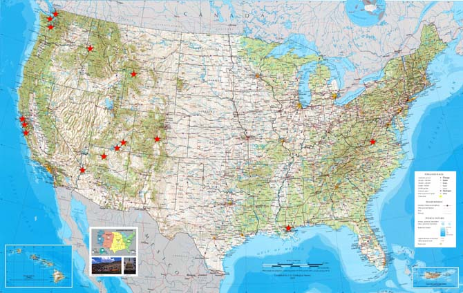

| About Bridges | Western Bridges | Resources | Site Map | Contact Us |

Click on a star to view a bridge in that location.
The American West is a rugged region covered with mountains, canyons, rivers, and ravines. Perhaps more than other regions of the American landscape, the West posed problems for settlers as they attempted to traverse its varied terrain.
Applying the best in human imagination and scientific knowledge, engineers have developed a vast network of highways and bridges to enable the easy movement of goods and travelers from coast to coast. This Web project tells about a few bridges of the western United States and the contributions they have made in the taming of the Wild West.
| About Bridges | Western Bridges | Resources |
|---|---|---|
|
Nature built the first bridges, such as Rainbow Bridge in Utah's Natural Bridges National Monument. Man-made bridges began as tree trunks laid in girder fashion. The bridging of barriers is important to the story of human settlement. The 16th-century architect and engineer commented that "bridges should befit the spirit of community by exhibiting commodiousness, firmness and delight." |
Engineers have modeled their work after three types of bridges — beam, arch and suspension. These designs include truss, cantilever, cable-stayed, tied-arch and movable spans. Here you can see examples of bridge types found in the American West. These include highway bridges, trestles and footbridges. All are a vital part of the landscape that adds beauty and community to an otherwise hostile environment. |
Certainly this Web site does not comprehensively cover the vast array of bridges that close the endless gaps of canyons and rivers that characterize the western United States. Here are a few links that offer more information about bridges, not just those of the American West but the countless marvels from around the world. |
| Explore About Bridges | Explore Western Bridges | Explore Resources |